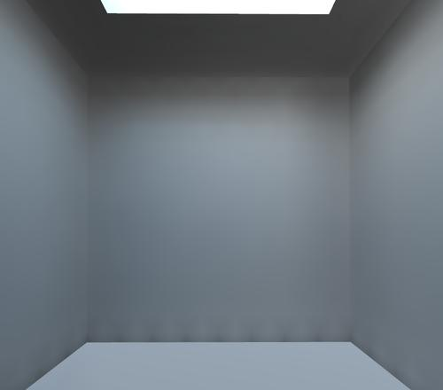
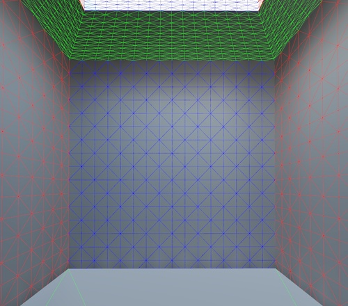

- Generated by
 1.9.7
1.9.7
|
LightsprintSDK 2021.08.08
|
Realtime lighting using dynamic lights is a mainstream approach today, however its realism was always severely limited by lack of properly computed indirect light.
Fireball and Architect techniques solve this realtime global illumination problem (see samples), however, quality suffers in presence of certain geometry "errors", so you might have to clean up your geometry.
Following hints help you get good performance and quality in your projects.
For purpose of realtime GI calculation, we expect scene split in two parts, static and dynamic.
Static scene is a scene skeleton, big objects that never move, e.g. walls. Number of triangles in static scene is the most important performance and memory footprint factor, so we recommend creating as lowpoly walls as possible, with eventual details baked into normal maps or height maps.
Huge unnecessary polygons (e.g. box around scene) reduce speed and quality, remove them.
To achieve the best quality and performance, keep triangle sizes similar (on the same order of magnitude), avoid mixing very small and very large triangles. If very large polygon must be present, and it reflects light, tessellate scene a bit, just to break huge triangles - GI quality will improve. Don't tessellate too much, both performance and quality would drop.
Realtime GI consists of several components mixed together: per-pixel direct lighting, per-pixel indirect lighting and per-vertex indirect lighting. Because of per-vertex component, all static meshes must satisfy one simple rule required by all engines with per-vertex lighting:
Two triangles are disjunct, share 1 vertex or share 1 edge and 2 vertices.
So in other words, it is not allowed to
See that all forbidden cases can be easily fixed. This operation can be automated.
It is also recommended to avoid 'needles', triangles with needle-like shape, as artifacts may appear in their proximity.
Dynamic scene is made of objects that freely move and of small objects. Number of triangles in dynamic scene has no impact on performance, so we recommend using as detailed models as suitable.
Realtime GI is fully per-pixel, so restrictions related to per-vertex lighting don't apply to dynamic objects.
All material types are supported. There's no need for any additional information, Lightsprint automatically converts your engine's native materials to Lightsprint materials used during calculation. Complex materials don't slow down GI calculation, so we recommend using as good looking materials as possible.
All light sources are supported - point, spot, directional, emissive materials, sky (flat color, LDR or HDR texture) and they may arbitrarily change in realtime.
Lightsprint SDK does not lock your data in properietary formats. Instead, it supports 95+ standard file formats. In case you pick Collada, here's list of available Collada plugins.
When creating night scene, you might consider two options - reduce light intensity or make materials darker. Both have the same effect on direct illumination. But global illumination reveals dramatic difference - bright materials reflect lots of light and create rich indirect illumination with color bleeding; dark materials absorb light and hardly create any indirect illumination. So reducing light intensity simulates night in normal world; making all materials dark simulates day in world covered by black color. Of course we recommend keeping usual materials and reducing light intensity, results look better.

|

|
Above screenshots show realtime GI from skylight coming through ceiling opening. There are some quality issues vissible.